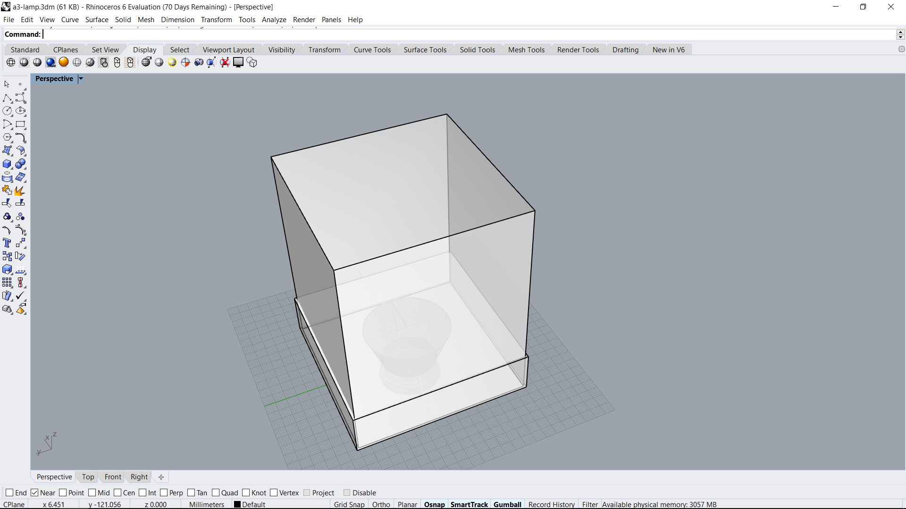
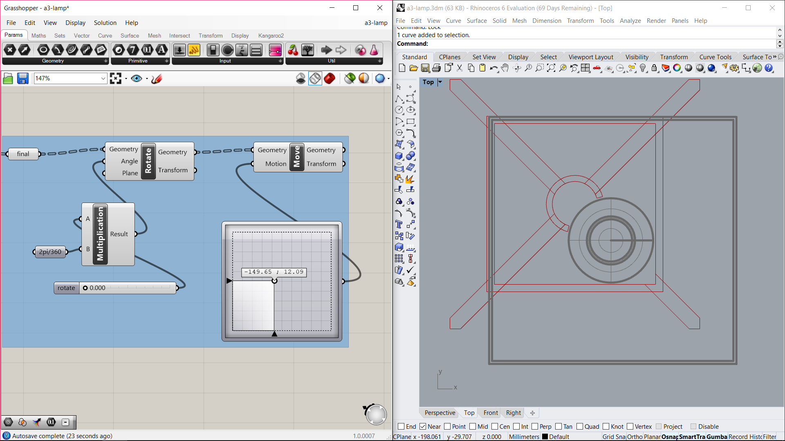
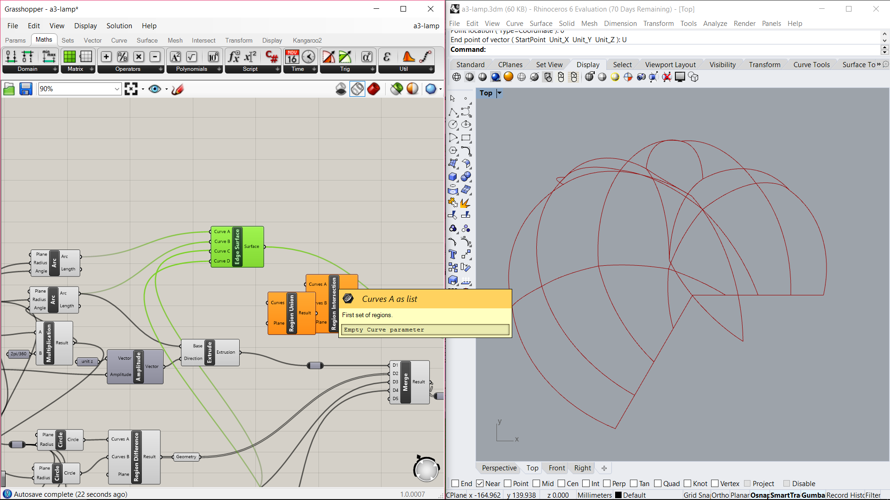
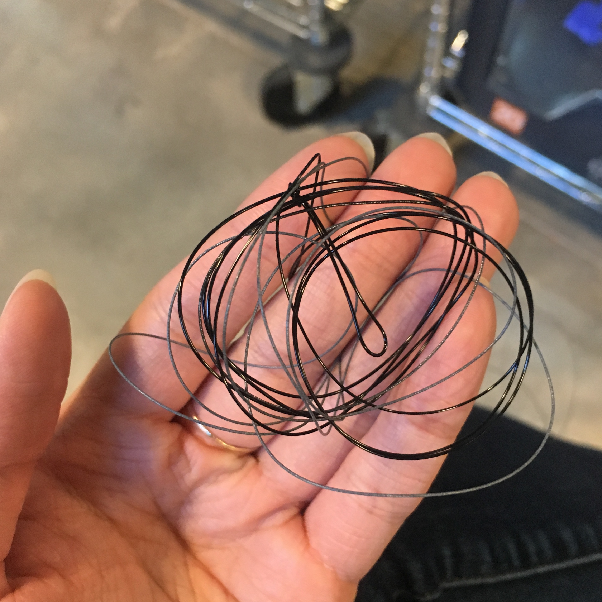
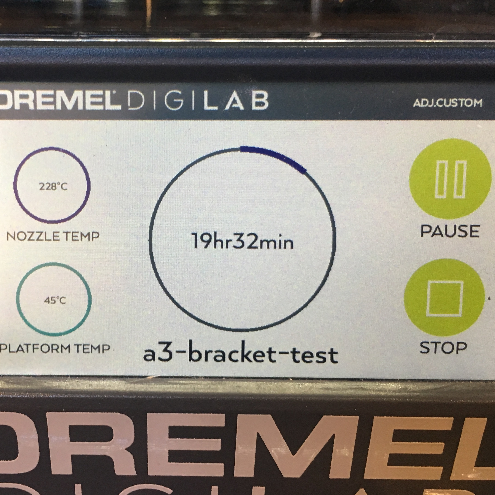
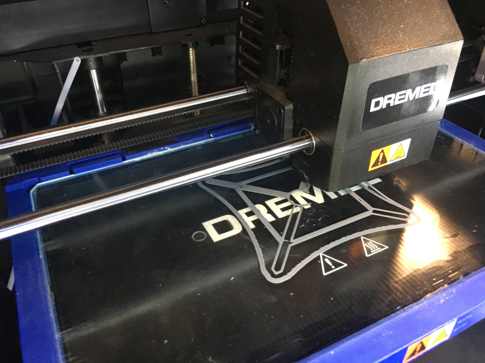
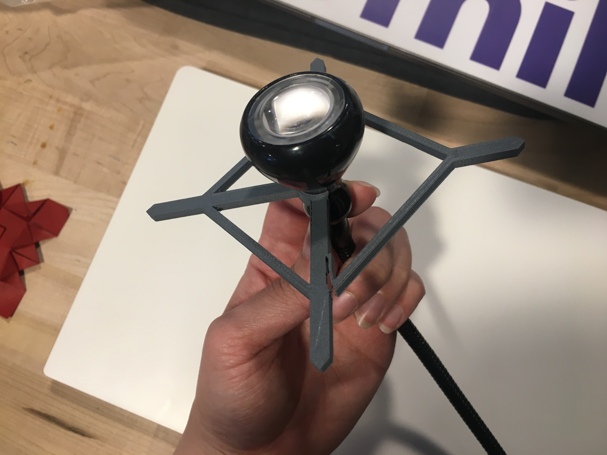
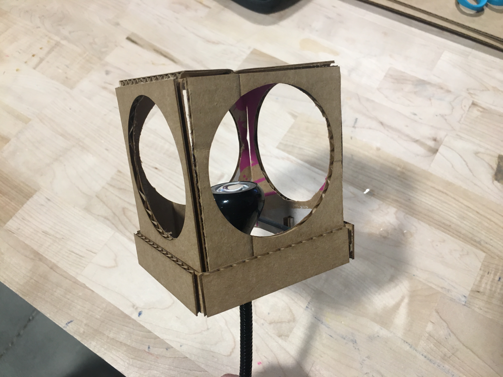
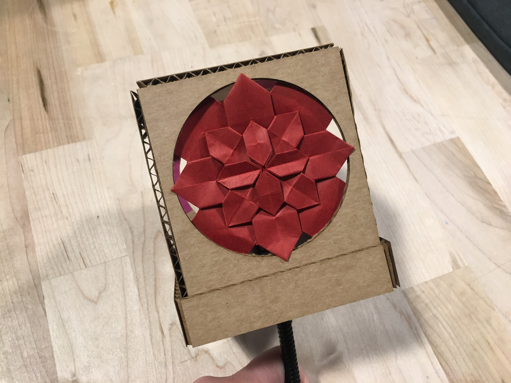

Assignment 3: 3D Printed and Laser-cut Lamp

A glamour shot of what the lamp would look like with colored paper.
Overview
This week, we made a lamp using both 3D printed and laser-cut parts.Materials
- Digital calipers
- Grasshopper & Rhino
- Adobe Illustrator
- Different types of cardboard
- Laser Cutter
- 3D Printer Filament
- 3D Printer
- Ikea Lamp
Ideation
When thinking about light, I thought of aquariums and windows into different scenes. I used to live on the central coast of California and I would often visit the Monterey Bay Aquarium, where the glass was a window into a different world.
As a caveat, the stars did not align for me this week and I was not going to have time during the weekend to be in lab, which meant I wouldn't have much time to test and iterate. Since I would have a very limited time in lab, I tried to design mine to be as simple as possible but also extensible. I made my lamp a simple box with the intent of eventually layering colored paper in there to create scenes.
Design
I wanted to make mine a simple cube made from one piece of cardboard with a simple locking mechanism to hold it together. I made use of my knowledge from last week and decided to just cut out the 5 sides of the open box, and then score the inside edges to make it easy to bend. I also cut out another band that would wrap around the bottom of the box to hold it all together.

A quick mockup of the lamp and lampshade to scale so I can better visualize how everything looked together.

Using the mockup of my lamp and lampshade to quickly see how the bracket would fit.
I also designed a snap-on bracket for my light that was going to be as simple and light as possible so that I would be able to iterate if needed in the hours I would be able to stay in lab. The snap-on bracket consists of an arc/partial ring that would snap onto the box, as well as arms and cross-supports that would fit into slots cut into the cardboard box.

Fun screenshot of my attempt to make an arc. I am still fumbling with Grasshopper a bit.
Originally, I thought of scoring the inside of the cardboard box in order to have a place to slide in paper designs, but it would make angling the box a bit awkward. So for this iteration, I didn't score the inside of the cardboard and just opted to create the window for now. I designed the box in Illustrator simply because I thought it would be quicker for me at the moment.
Process
Snap-on bracket
I waffled a bit on whether I should design my bracket in Grasshopper or in Rhino. I ended up making my bracket entirely in Grasshopper so I could quickly edit the thicknesses and widths if I needed to. In addition, I figured I would want to print some very quick test pieces, and making my bracket in Grasshopper allowed for me to easily separate and bake the different components of the bracket. I baked and exported the partial ring that would snap onto the lamp which would serve as a quick test for the 3D printer settings, flexibility of the material, and fit of the bracket. I designed with the speed of the print in mind, so I would load the stupid triangle list into the Dremel application in order to estimate the printing time. The test ring was estimated to take about 2 minutes to print, and the total bracket was estimated to take about 20 minutes to print.


Anxiety, 2019
I was fortunate in that everything pretty much went according to plan! I printed 2 test rings and adjusted my model as necessary, which was very quick since I had built the entire thing in Grasshopper. My entire bracket printed in less than 20 minutes (even though the printer listed 19+ hours...) and I was thrilled! It also snapped on my lamp very nicely and was sturdier than I expected.

3D printing the lamp bracket.

First pass at the bracket. I forgot to set the cross bar further away from the center so the top of the lamp wouldn't fit. Luckily, I was able to edit it and print out another one in 20 minutes!
Lamp shade
I also noodled a bit on whether I should try to use Rhino/Grasshopper for the cardboard box since it was such a simple shape, though there were some strategically places slots that I needed to account for. I ended up using Illustrator since I hadn't practiced creating the laser cut patterns with Rhino yet, and I figured that would take more debugging than I had the patience or time for at the moment.
For the laser-cut cardboard, I initially cut a tiny version in order to ensure that everything cuts the way I expect. I run into some issues with the color mapping not working properly because Illustrator was set to CYMK color instead of RGB. After I got that properly set, I successfully cut out a small test piece. However, the full piece did not cut all the way as I had expected, and I ended up using a blade to finish some of the cuts.
As mentioned earlier, I had originally wanted to laser cut colored paper to create tiny scenes. While I never got there, I did find this piece of origami left over from an activity at the Mill, which also happened to fit nicely with the box while also adding some interesting patterns.
Results

The final lamp assembled.
I set out to make the simplest and easiest solution I could think of that still looked relatively elegant, and astonishingly, things went to plan! I certainly wish I had a little more time and ability to allow myself to be creative with the design of the lamp, but I was able fully to embrace the philosophy of rapid prototyping and push out something functional in the end.
3D printed snap-on bracket
- PLA, 235 deg. C
- Fast/low quality
Cardboard box
- Width of cardboard: 0.124" / Single slot width: 0.112"
- Laser cutter score settings: 100 speed, 30 power, 50 frequency
- Laser cutter cut settings: 40 speed, 100 power, 50 frequency

The final proof of concept lamp with one piece of colored paper placed in the "window." Angles make all the difference.
Acknowledgments
Kudos to my classmates: Angel, Dawn, D'Marcus, Dhwani, Lukas, and everyone else in the Tuesday night crew, plus everyone who figured out the 3D printer settings before I started. :')
Source Files
- a3-lamp.3dm [Screenshot] - Rhino file with the baked lamp brackets and mockups of the lamp design.
- a3-lamp.gh [Screenshot]- Grasshopper file with the lamp bracket design.
- a3-lamp.ai [Screenshot] - Illustrator file with the laser cut cardboard box.
![[Screenshot]](img/a3-lamp-3dm.png){kind=link}
![[Screenshot]](img/a3-lamp-gh.png){kind=link}
![[Screenshot]](img/a3-lamp-ai.png){kind=link}